COMBAT CIRCULATORY SYSTEM
循环系统：从生理学到战斗前沿
本次授课对循环系统的基础生理学及其在现代战场救护中的核心应用进行了系统性、多层次的综合调研。分析表明，对循环系统的理解必须超越基础解剖学，深入到其在创伤应激下的动态病理生理变化，以及由此催生的战术医学干预原则。
SECTION 01
生命的引擎：基础解剖学与生理学
1.1 作为双重泵的心脏
THE HEART AS A DUAL PUMP
循环系统的核心是心脏，它是一个高效、不知疲倦的肌肉泵。
从功能上讲，心脏可以被理解为一个“双重泵” 。驱动体循环和肺循环这两个独立但相互关联的回路。
心脏由四个心腔组成：两个上方的、壁较薄的心房（右心房和左心房）和两个下方的、壁较厚的、肌肉发达的心室（右心室和左心室） 。右心房接收来自全身的缺氧血，而左心房接收来自肺部的富氧血。心室则是主要的泵血腔室，右心室将缺氧血泵入肺部，左心室则将富氧血泵入全身。
为了确保血液的单向流动，心脏内部有四个精密的瓣膜：三尖瓣（位于右心房和右心室之间）、肺动脉瓣（位于右心室和肺动脉之间）、二尖瓣（位于左心房和左心室之间）以及主动脉瓣（位于左心室和主动脉之间） 。这些瓣膜的顺序性开放和关闭构成了心动周期的机械基础，即心音的来源，确保血液在系统中高效、无回流地推进 。
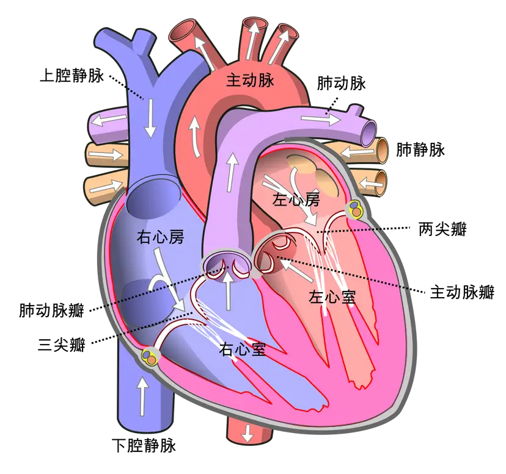
心脏壁本身由三层组织构成：外层的心外膜（即脏层心包）、中层厚实的心肌层和内层的心内膜 。心肌层是功能核心，由特殊的心肌细胞组成，这些细胞通过扭曲和盘绕形成环状结构，使其能够以高效的方式收缩和泵血 。在微观层面，心肌的收缩依赖于肌球蛋白和肌动蛋白丝的相互作用，这一过程由钙离子的浓度精确调控，为理解休克状态下的心肌功能变化和复苏药物（如正性肌力药物）的作用机制提供了生理学基础 。
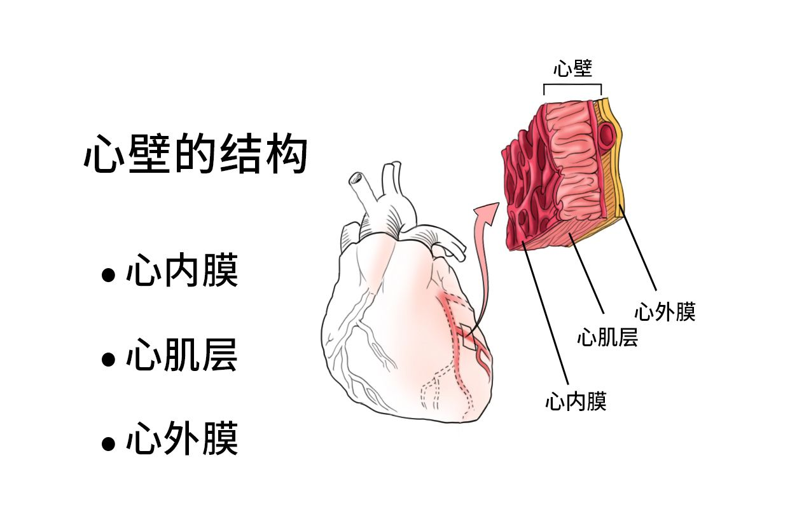
1.2 血管网络
VASCULAR NETWORK: ARTERIES, VEINS & CAPILLARIES
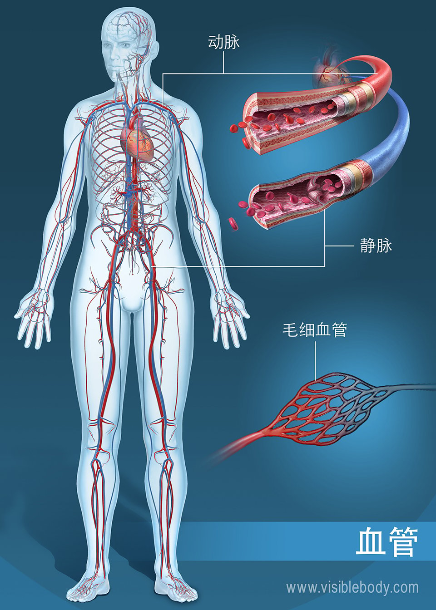
动脉
负责将血液从心脏输送出去。它们必须承受心脏泵血产生的高压，因此其管壁厚实、富有弹性和肌肉组织 。最大的动脉是主动脉，它直接与左心室相连，并逐渐分支成更小的动脉，最终形成微动脉，将血液导入毛细血管床。
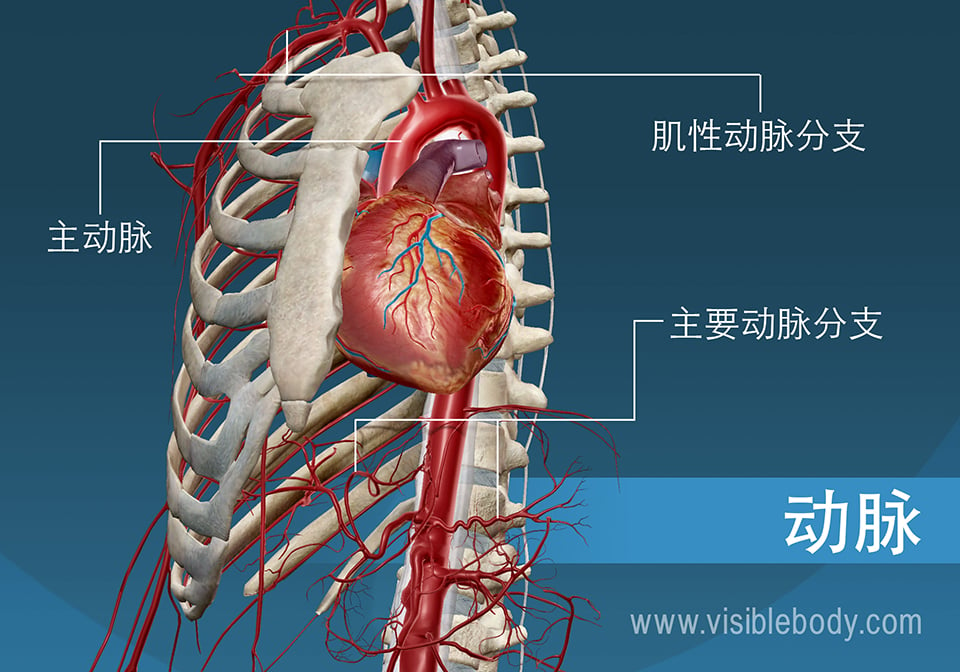
静脉
负责将血液输送回心脏。与动脉相比，静脉系统是一个低压、高容量的系统。因此，静脉的管壁更薄，弹性较小 。许多静脉，特别是四肢的静脉，内部有瓣膜，以防止血液在重力作用下倒流。血液从毛细血管汇入微静脉，然后汇入更大的静脉，最终通过上腔静脉和下腔静脉返回右心房 。
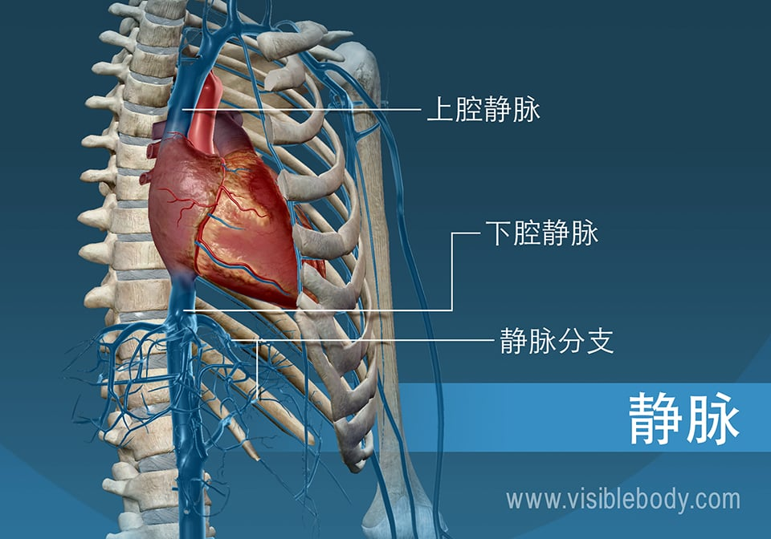
毛细血管
是连接动脉和静脉的微观血管网络，是循环系统实现其主要功能的场所 。它们的管壁极薄，仅由一层内皮细胞构成，这使得氧气、二氧化碳、营养物质和代谢废物能够在血液和周围组织细胞之间进行高效交换。毛细血管前括约肌可以调节进入毛细血管床的血流量，从而根据组织的代谢需求精确地分配血液 。
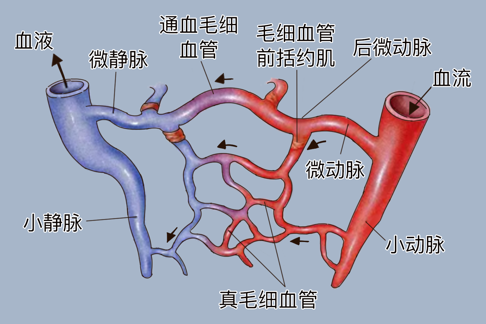
整个血管系统形成了一个从心脏出发，经过动脉、微动脉、毛细血管、微静脉、静脉，最终返回心脏的完整层级结构，确保了血液的持续循环 。
1.3 两大循环
PULMONARY & SYSTEMIC CIRCUITS
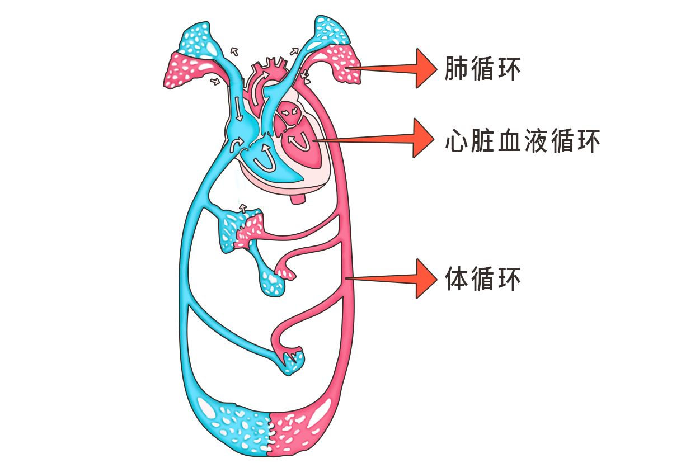
肺循环 低压回路
是一个较短的、低压的回路，其唯一目的是进行气体交换 。其路径如下：缺氧的静脉血从全身返回右心房，通过三尖瓣进入右心室 。右心室收缩，将缺氧血泵出，通过肺动脉瓣进入肺动脉 。肺动脉随即分支，将血液输送到左右两肺的毛细血管网。在这里，血液释放二氧化碳并重新摄取氧气 。富含氧气的新鲜血液通过四条肺静脉（每侧肺两条）返回左心房，完成肺循环 。
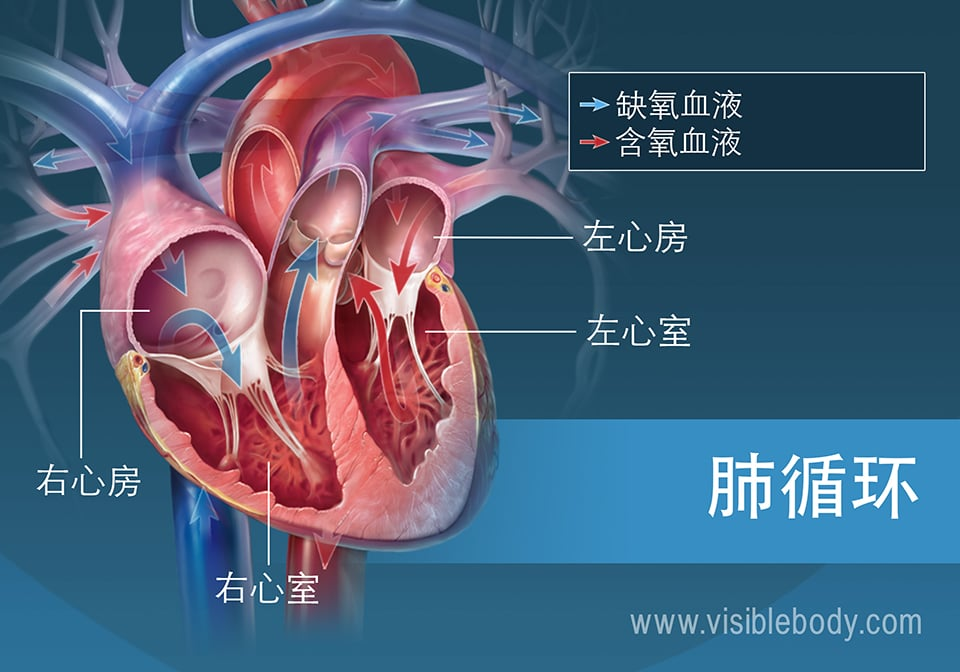
体循环 高压回路
是一个更长的、高压的回路，负责向身体所有其他组织和器官供应氧气和营养物质 。其路径如下：富氧血从左心房通过二尖瓣进入左心室 。左心室作为心脏最强有力的泵，收缩时将富氧血通过主动脉瓣泵入主动脉 。主动脉及其不断分支的动脉系统将血液输送到全身各处，包括大脑、内脏器官和四肢 。在各组织的毛细血管床，血液再次进行物质交换，释放氧气和营养，并带走二氧化碳和废物，变为缺氧血 。这些缺氧血通过静脉系统汇集，最终经由上腔静脉（收集上半身血液）和下腔静脉（收集下半身血液）返回右心房，完成体循环，并准备再次进入肺循环 。
这种双循环设计极大地提高了氧气输送效率，将富氧血和缺氧血完全分开，这是维持恒温动物（如人类）高代谢率生活方式所必需的 。
1.4 血液：生命的运输载体
BLOOD: THE TRANSPORT MEDIUM OF LIFE
血液是循环系统中的运输介质，其复杂的成分共同维持着人体的内环境稳定 。血液的主要功能是运输，它承载着氧气、营养物质、细胞废物、激素以及对身体稳态至关重要的许多其他物质，往返于细胞之间 。
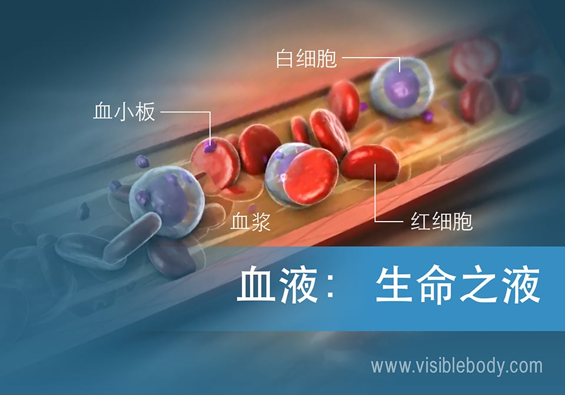
血液由血浆和血细胞组成。
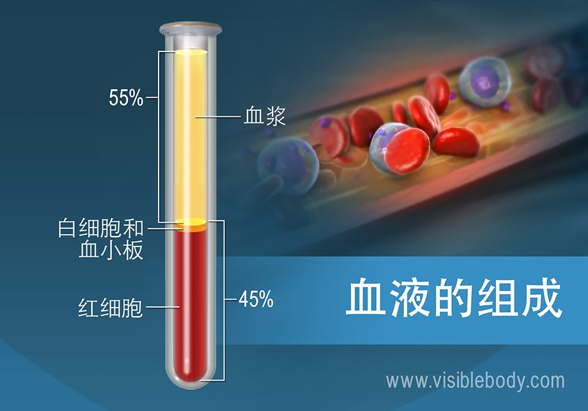
血细胞主要包括：红细胞（Erythrocytes）：是血液中最丰富的细胞，其主要功能是通过细胞表面的血红蛋白分子结合并运输氧气 。血红蛋白是血液呈现红色的原因，也是循环系统输送氧气能力的核心。
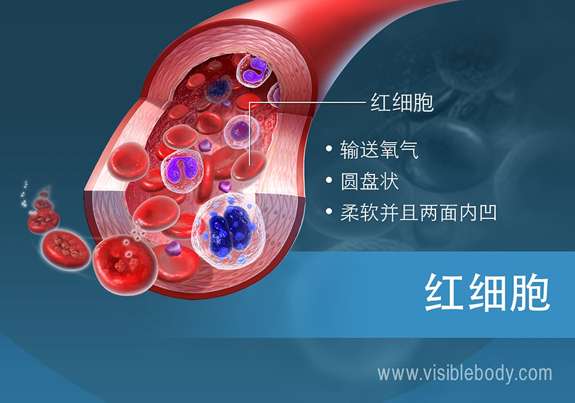
白细胞（Leukocytes）：是免疫系统的重要组成部分，负责抵抗感染和疾病 。
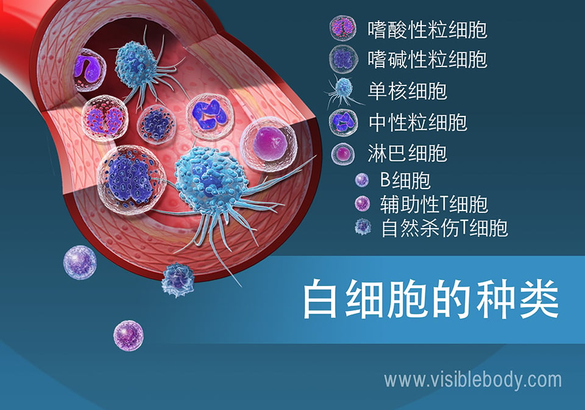
血小板（Thrombocytes）：是微小的细胞碎片，在血管受损时启动凝血过程，形成血栓以阻止出血 。
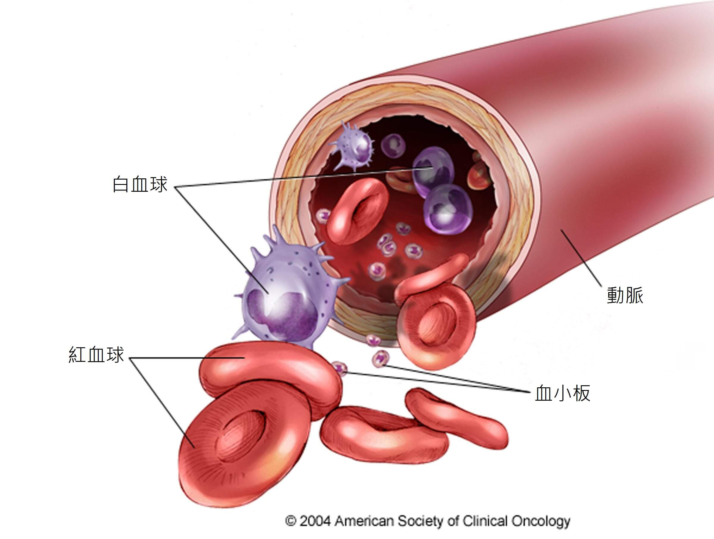
血浆是血液的液体基质，主要成分是水，其中溶解了多种物质，包括蛋白质（如白蛋白、凝血因子）、电解质、营养物质（如葡萄糖、氨基酸）和激素。在创伤性出血中，伤员不仅丢失了携带氧气的红细胞，还丢失了对于凝血至关重要的血小板和凝血因子，这解释了为什么现代创伤复苏强调使用全血或平衡比例的血液成分。
1.5 实用血液动力学
PRACTICAL HEMODYNAMICS
解剖结构为生理功能提供了框架，而血液动力学则是描述血液在血管系统中流动的物理学原理。对于战斗医务人员来说，掌握几个核心概念至关重要，因为它们是评估伤员和指导复苏的基础。
流量 ∝ 压力 / 阻力
流量正比于压力，反比于阻力。在创伤护理中，这意味着维持足够的血压对于确保重要器官的灌注至关重要。当失血导致血压下降时，身体会通过收缩外周血管（增加阻力）来尝试维持核心器官的灌注压力，这是休克代偿机制的关键部分 。
从根本上看，循环系统不仅仅是一个简单的管道系统，它是一个动态的、高压的、闭环网络。这种闭环特性是其高效输送氧气和营养的优势所在。然而，这也使其在创伤面前显得异常脆弱。在一个封闭的加压系统中，任何一个破口（即出血）都会导致整个系统的压力和容量迅速、灾难性地丧失。这一物理现实解释了为什么在战斗创伤中，不受控制的大出血能够比气道阻塞更快地导致死亡。因此，对循环系统解剖学的理解，必须从纯粹的描述性知识，升华为对该系统固有脆弱性的战术性认知，这对于战斗医务人员来说至关重要。
SECTION 02
当系统崩溃时：创伤性失血性休克
战斗创伤最直接和致命的威胁之一就是大出血，它会迅速破坏循环系统的稳态，导致失血性休克。理解休克从细胞层面到全身反应的病理生理过程，是有效实施战术战斗伤员救护（TCCC）干预措施的理论基础。
2.1 失血的级联反应
CASCADE OF HEMORRHAGE
失血性休克被定义为由于大量失血导致循环血量严重不足，从而无法满足组织对氧气的需求，造成组织灌注不足和缺氧的状态 。当血液和氧气输送中断时，细胞的能量代谢会发生根本性的转变。在正常情况下，细胞通过有氧代谢，高效地将葡萄糖转化为三磷酸腺苷（ATP），为所有生命活动提供能量。然而，在缺氧条件下，细胞被迫转向效率低得多的无氧代谢 。
在无氧代谢过程中，丙酮酸被转化为乳酸，这一过程虽然能产生少量ATP以维持最基本的细胞功能，但其副产品乳酸会在组织和血液中迅速累积 。乳酸的堆积导致了代谢性酸中毒，这是休克状态下最早出现的生化紊乱之一 。这种细胞层面的能量危机和酸中毒环境，是引发后续一系列全身性病理生理变化的起点，标志着伤员开始进入一个危险的下行螺旋。
ATP
能量危机
2.2 & 2.3 从代偿到失代偿
COMPENSATION TO DECOMPENSATION
代偿机制：面对失血导致的循环血量下降，身体会立即启动一系列强大的自主神经和体液调节机制，试图维持对核心器官的灌注。
主要的代偿机制包括：
- 交感神经系统激活：血压下降被颈动脉窦和主动脉弓的压力感受器感知，信号传入中枢，迅速激活交感神经系统 。
- 心率和心肌收缩力增加：交感神经兴奋和肾上腺释放的儿茶酚胺（肾上腺素和去甲肾上腺素）直接作用于心脏，导致心率加快（心动过速）和心肌收缩力增强，以期在血容量减少的情况下维持心输出量 。
- 外周血管收缩：交感神经激活导致皮肤、肌肉和胃肠道等非关键区域的血管强烈收缩。这种“中心化”反应将有限的血液重新分配，优先保证心脏、大脑和肾脏等重要器官的血供 。临床上表现为皮肤湿冷、苍白和毛细血管再充盈时间延长。
- 肾素-血管紧张素-醛固酮系统（RAAS）激活：肾脏灌注下降会刺激肾素的释放，进而激活RAAS。血管紧张素II是一种强效的血管收缩剂，进一步增强外周阻力；而醛固酮则促进肾脏对钠和水的重吸收，以保存血管内容量 。
在休克的代偿期，由于心率增加和外周血管收缩，伤员的收缩压可能维持在正常或接近正常的水平，这极具欺骗性。然而，脉压差（收缩压与舒张压之差）的变窄和心动过速往往是更早出现的警示信号。外周血管强烈收缩导致舒张压显著升高。而另一方面，由于实际血容量不足或心脏回心血量减少，心脏的每搏输出量是下降的，这导致收缩压的上升动力不足，甚至可能轻微下降。因此，收缩压与舒张压之间的差值（即脉压差）会明显缩小。 。
失代偿转折点：当失血持续，超过了身体代偿能力的极限时，伤员便会进入失代偿期休克。这是一个关键的转折点，心输出量急剧减少，收缩压开始显著下降（低血压），这是休克失代偿期的标志性表现。严重的组织缺氧和不断加深的代谢性酸中毒会损害细胞功能，形成恶性循环。一旦进入这个阶段，如果不进行迅速有效的干预，伤员将很快进展到不可逆性休克和死亡。
BP↓
关键转折点
2.4 创伤的“致死三联征”
THE LETHAL TRIAD OF TRAUMA
在严重创伤中，一个自我放大的恶性循环——“致死三联征”——是导致伤员死亡的主要驱动力。它们并非三个独立的问题，而是一个紧密相连、相互加剧的病理生理过程。
1. 酸中毒
Acidosis
组织灌注不足导致的无氧代谢是酸中毒的主要原因。酸性环境会直接抑制凝血酶的活性，并损害血小板的功能，从而严重削弱血液的凝固能力。
2. 低温
Hypothermia
创伤伤员极易发生低温。凝血过程依赖于一系列酶促反应，而这些反应在低温下效率会急剧下降。体温每下降1°C，凝血因子的活性就会降低约10%。
3. 凝血功能障碍
Coagulopathy
除了凝血因子和血小板的物理性丢失，还存在"急性创伤性凝血病"。这种凝血障碍随后会被酸中毒和低温进一步放大。
这三者形成了一个致命的反馈循环：酸中毒和低温加剧了凝血障碍，凝血障碍导致了更多的出血，更多的出血又加重了组织灌注不足，从而使酸中毒和低温更加严重。这个循环一旦启动，就会迅速加速，将伤员推向死亡。
表1：失血性休克的分类
为了在战场上快速评估伤情并指导干预，通常将失血性休克根据失血量和临床表现分为四级。这张表格综合了多个来源的数据，为医务人员提供了一个实用的临床评估工具 。
| 等级 | 估算失血量 (mL) | 估算失血量 (%) | 心率 (次/分钟) | 血压 | 脉压差 | 呼吸频率 (次/分钟) | 精神状态/临床体征 |
|---|---|---|---|---|---|---|---|
| I级 | < 750 | < 15% | < 100 | 正常 | 正常或略降 | 14-20 | 轻微焦虑 |
| II级 | 750 - 1500 | 15% - 30% | > 100 | 正常 | 变窄 | 20-30 | 中度焦虑，皮肤湿冷 |
| III级 | 1500 - 2000 | 30% - 40% | > 120 | 下降 | 显著变窄 | 30-40 | 焦虑，意识模糊，尿量减少 |
| IV级 | > 2000 | > 40% | > 140 | 显著下降 | 极窄或无法测出 | > 35 | 意识模糊，嗜睡，濒死感 |
这张表格将抽象的病理生理过程与具体的临床指标联系起来，为战斗医务人员提供了将观察数据转化为行动决策的关键工具。
SECTION 03
TCCC循环管理方法：原则与实践
战术战斗伤员救护（TCCC）指南是基于数十年战斗经验和循证医学提炼出的一套救生原则，其核心是根据战场环境的特殊性，对救治的优先级进行重新排序。
MARCH
Massive Hemorrhage, Airway, Respiration, Circulation, Hypothermia/Head Injury
3.1 大出血（“M”）：首要优先事项。TCCC最革命性的贡献之一，就是将传统急救的“ABC”原则，转变为适应战场现实的“MARCH”流程。这一转变的背后，是来自战场的大量数据证明，可预防的战斗死亡中，首要原因是由四肢大出血导致的失血过多。一名伤员可能在短短几分钟内因股动脉破裂而死亡，这比因气道阻塞而窒息要快得多。
因此，在TCCC的所有阶段，控制大出血都是压倒一切的优先事项。这种将大出血控制置于气道管理之前的做法，是TCCC理念的基石。
3.2-3.4 战术区域救护核心技能
当伤员被转移到相对安全的TFC环境后，医务人员可以开始进行更全面、系统的评估和处理。
3.2 循环评估 (“C”)
其核心是识别并处理所有出血来源，并判断伤员是否进入休克状态。在战术环境下，两个最可靠的休克指标是：意识状态改变（在没有脑外伤的情况下）和桡动脉搏动微弱或消失。如果伤员出现烦躁、嗜睡或意识模糊，或者触摸不到桡动脉搏动，就必须假定其已进入失血性休克，并立即启动复苏流程。
3.3 体外出血控制
止血带的重新评估与转换：在TFC阶段，任何隔着制服放置的止血带都应被取下，并在伤口上方2-3英寸处的裸露皮肤上重新放置，确保出血完全停止。止血敷料的应用：对于无法使用止血带的部位（如腹股沟、腋窝），使用含高岭土的止血纱布，尽可能深地填塞入伤口，直接接触出血点，然后用至少3分钟的持续直接按压。
3.4 建立通路 (IV/IO)
TCCC明确指出：并非所有伤员都需要建立静脉通路！这是一个重要的战术和医疗原则。只有当伤员处于休克状态、有发生休克的重大风险，或者需要静脉给药时，才应建立血管通路。首选18号静脉留置针连接肝素帽。若无法快速建立，应毫不犹豫地使用骨内（IO）通路作为替代方案。
3.5 氨甲环酸(TXA)
STOPPING INTERNAL BLEEDING
对于躯干等部位的非可压迫性内出血，TXA通过抑制纤溶酶的活性来稳定已形成的血凝块，从而减少内出血。
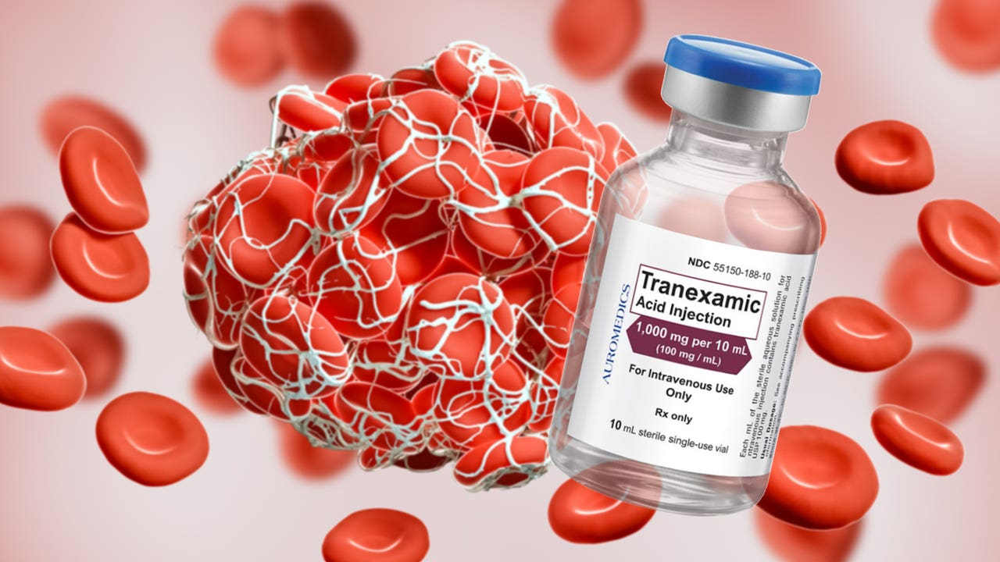
< 3 HR
黄金时间窗口
适应症：TCCC指南建议，对于预计需要大量输血的伤员（例如，表现出失血性休克、一处或多处主要截肢、躯干穿透伤或有严重出血证据的伤员），应给予TXA 。
剂量与时机：标准剂量为1克TXA溶于100毫升生理盐水或林格氏液中，在10分钟内静脉输注完毕。最关键的一点是，TXA必须在受伤后尽快给予，且不得晚于伤后3小时。研究表明，伤后1小时内给予TXA的生存获益最大，而超过3小时后给予不仅无效，反而可能增加死亡率 。
3.6 低血压复苏原则
PERMISSIVE HYPOTENSION
TCCC的液体复苏策略是现代创伤救治的另一项核心变革。其目标不是将血压恢复到正常水平，而是实施所谓的“低血压复苏”。在出血源头尚未得到外科手术控制之前，过早、过快地将血压升至正常水平，可能会冲掉刚刚形成的脆弱血凝块，导致再次出血。
复苏终点：可触及的桡动脉搏动、意识状态改善或收缩压达到80-90 mmHg。
复苏液体优先顺序（核心是“用血来补血”）：
- 全血（特别是低温保存的低滴度O型全血）是首选 。
- 若无全血，则使用1:1:1比例的血浆、红细胞和血小板 。
- 再次，是1:1比例的血浆和红细胞。
- 再次，是单独的血浆或红细胞。
- 若无血液制品，可使用胶体液（如赫斯淀）。
- 最后选择才是晶体液（如乳酸林格氏液或等离子液） 。
表2：TCCC循环管理决策摘要
| 评估发现 | 优先TFC干预措施 |
|---|---|
| 危及生命的肢体出血 | 在伤口上方2-3英寸皮肤处应用CoTCCC推荐的止血带。确保出血停止且远端脉搏消失。 |
| 桡动脉搏动微弱/消失和/或意识状态改变 | 假定为休克。建立IV/IO通路。按优先顺序启动液体复苏，目标是恢复桡动脉搏动或改善意识。 |
| 预计需要大量输血（休克、躯干穿透伤等） | 尽快（伤后3小时内）给予1克氨甲环酸（TXA）静脉输注。 |
| 非肢体部位的可压迫性出血 | 用止血纱布填塞伤口，并施加至少3分钟的直接压力，然后用压力绷带包扎。 |
| 伤员需要静脉用药但未处于休克状态 | 建立一个18号静脉留置针和肝素帽（盐水锁），按需给药。无需立即输液。 |
| 伤员情况稳定，无休克迹象，无需静脉用药 | 无需建立IV/IO通路。 如果伤员清醒且能吞咽，可鼓励其口服补液。 |
SECTION 04
损伤控制复苏 (DCR) 的先进策略
DCR是一种综合性的方法，旨在通过早期、积极的干预来对抗“致死三联征”，为伤员赢得接受确定性外科手术的时间。
4.1 DCR 哲学：三大支柱
DCR的核心是三大支柱的同时实施，而非线性顺序。这是从“先手术后复苏”到“复苏与手术同步”的转变。
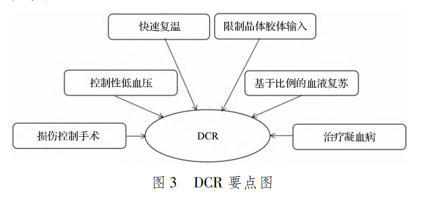
4.2 黄金标准：全血输注
原理：创伤伤员丢失的是全血，因此最符合生理的替代品就是全血。它以天然的1:1:1比例提供了红细胞、血浆和血小板，以及所有必需的凝血因子。类型与应用：低温保存的低滴度O型全血（LTOWB）是战区预置和前沿复苏的首选产品。新鲜全血（FWB）则是在紧急情况下的最后手段。后勤与效果：LTOWB显著简化了战地血库的后勤保障，临床研究表明其安全性和生存率与传统成分输血相当，甚至更具优势。
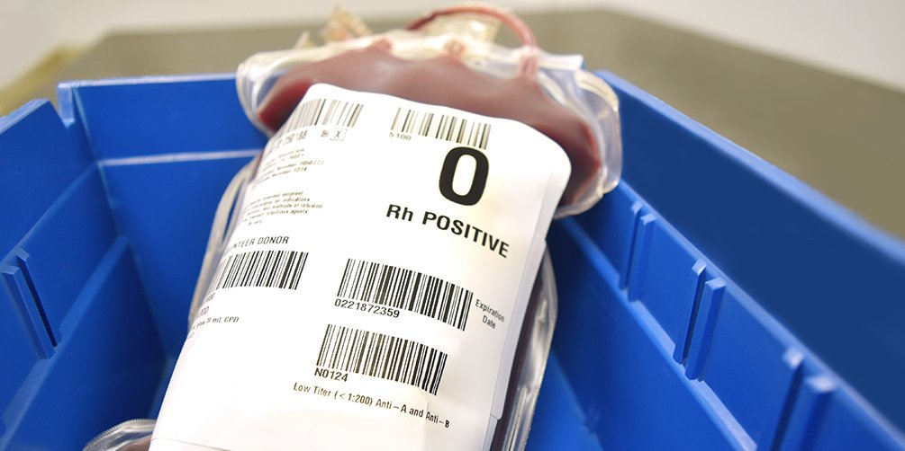
表3：不同复苏液体的性能比较
| 复苏液体 | 携氧能力 | 凝血因子/血小板 | 对凝血功能的影响 | 所需容量 | 后勤考虑 |
|---|---|---|---|---|---|
| 低滴度O型全血 (LTOWB) | 高 | 全部含有 | 恢复/支持 | 低 | 单一制品，需冷藏，后勤简化 |
| 1:1:1 成分血 | 高 | 全部含有 | 恢复/支持 | 中 | 三种制品，储存条件不同，后勤复杂 |
| 胶体液 (如赫斯淀) | 无 | 无 | 稀释/可能损害 | 中 | 无需冷藏，但有剂量限制和副作用 |
| 晶体液 (如盐水) | 无 | 无 | 严重稀释/加重 | 高 | 易于获取和储存，但生理效果最差 |
此表清晰地揭示了为什么DCR理念强烈推荐使用全血。它不仅是唯一能够同时解决氧气输送和凝血功能障碍的液体，而且在后勤上也更适应战场需求。
4.3 应对非可压迫性躯干出血 (NCTH)
NCTH是战斗中导致可预防死亡的主要原因之一。为此，军事医学发展了一系列先进的干预手段。
骨盆固定带与连接处止血带
对于严重骨盆骨折，立即使用骨盆固定带缩小骨盆容积，稳定骨折。对于腹股沟或腋窝等连接处的出血，使用专门设计的连接处止血带进行控制。
主动脉血管内球囊阻断术 (REBOA)
概念：通过股动脉将带球囊的导管送入主动脉，在特定区域（Zone 1或Zone 3）充盈球囊，阻断远端动脉血流，为外科止血争取时间。适应症与挑战：用于难治性失血性休克，但有巨大的缺血性损伤和再灌注损伤风险，使用有严格的时间限制，并要求快速后送。
4.4 诊断辅助: POCUS
POINT-OF-CARE ULTRASOUND
将先进的诊断能力前移是现代军事医学的重要趋势。便携式床旁超声（POCUS）设备使医务人员能够在战场上“透视”伤员的身体。创伤重点超声评估（FAST）及扩展的eFAST检查，可以快速识别心包积血、腹腔内出血、气胸和血胸，极大地影响治疗决策和后送优先级。
这些先进技术（全血, REBOA, POCUS）的出现，标志着前沿医疗能力的根本性变革，正在重新定义战场上“可存活”的伤害范畴。
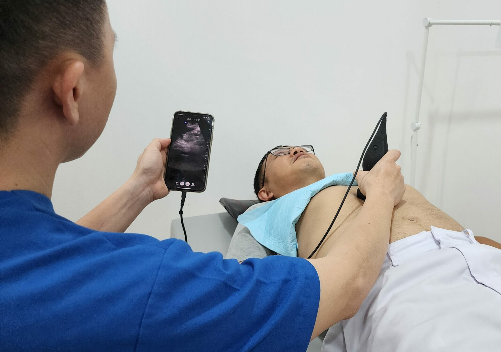
SECTION 05
出血控制与伤员救护的未来
未来发展将由数据、人工智能和尖端技术的融合所驱动。目标是创建一个更快速、更高效、甚至部分自主化的救生系统。
5.1 自动化生存链
THE SURVIVAL CHAIN
一个与“杀伤链”相对应的概念，通过融合传感器数据、人类护理者和智能技术，优化和加速医疗决策过程。其核心是实现人机协同，将救护从被动反应转变为主动预测和干预的、由数据驱动的系统。
5.2 AI 与机器学习
AI & MACHINE LEARNING
决策支持：AI算法将提供强大的决策支持，如伤员分类、病情预测和后送规划。自主记录：通过传感器自动识别和记录医疗干预措施，极大减轻医务人员的认知负担，并确保数据的完整性。
5.3 先进止血技术
NEXT-GEN HEMOSTATICS
先进止血剂：如无需加压即可封闭伤口的粘性液体止血剂，以及可注射的、能在体内膨胀的止血泡沫。纳米技术：能够模仿血小板功能、在出血部位自动聚集并加速凝血的纳米颗粒，有望实现更快速、更有效的靶向止血。
5.4 克服“数据沙漠”
OVERCOMING THE DATA DESERT
实现这一切的最大障碍是数据。当前军事医疗体系是一个“数据沙漠”，信息依赖手动输入，质量参差不齐。未来取决于能否建立一个能够被动、持续采集大量高质量数据的架构。最关键的近期“医学”进步，可能不是一种新药或新设备，而是为战场创建一个安全、高容量的数据采集和通信架构。
结论：一种现代战伤救治哲学
本次理论课对循环系统的基础生理学及其在现代战场救护中的核心应用进行了系统性、多层次的讲述。我们对循环系统的理解必须超越基础解剖学，深入到其在创伤应激下的动态病理生理变化，以及由此催生的战术医学干预原则。
首先，循环系统作为一个高效的闭环高压网络，其结构本身就决定了创伤性出血的快速致命性。这一根本性的脆弱点，是军事医学将大出血控制置于所有救治措施最优先地位的理论基石，并直接促成了从传统“ABC”到战场“MARCH”救治流程的范式转变。
其次，对失血性休克病理生理学的深入理解，特别是对“致死三联征”（酸中毒、低温、凝血障碍）作为一个自我放大的恶性反馈循环的认识，构成了现代创伤复苏策略的理论核心。这解释了为什么损伤控制复苏（DCR）强调必须同时、协同地进行干预，以打破这一致命循环，其措施包括低血压复苏、积极预防和处理低温，以及优先使用全血进行止血性复苏。
再次，TCCC指南和DCR原则共同推动了先进医疗能力的战略性前移。将全血输注、床旁超声诊断（POCUS/FAST）、乃至主动脉血管内球囊阻断术（REBOA）等以往仅限于后方医院的干预手段，推向更靠近伤点的救治梯队，正在从根本上改变战斗医务人员的角色和能力范围，并重新定义了战场生存的极限。
最后，展望未来，战斗伤员救护的下一次革命将由数据驱动。人工智能、自主系统和“伤员数字孪生”等概念虽然前景广阔，但其实现完全依赖于克服当前军事医疗体系面临的“数据沙漠”挑战。因此，建立一个能够被动、持续、安全地采集高质量生理和医疗数据的基础设施，是未来所有技术进步的先决条件。这标志着军事医学的关注点需要从纯粹的生物医学研究，扩展到信息技术、数据科学和系统工程的深度融合。
综上所述，从基础生理到前沿科技，对循环系统及其在战斗创伤中应用的理解和干预，已经形成了一个逻辑严密、证据驱动且不断演进的知识体系。为下一代军事医疗人员传授这一体系，不仅是教授一套技能，更是灌输一种基于战场现实、以数据为核心、以系统化思维为导向的现代战伤救治哲学。